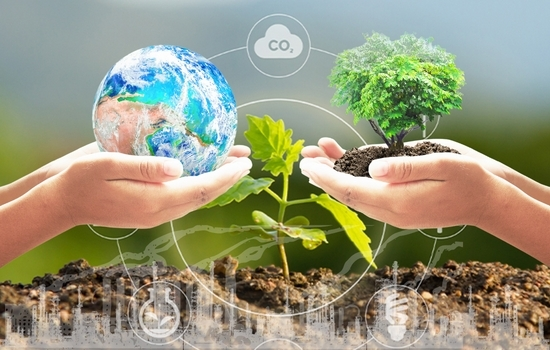

ผู้คนจำนวนมากต้องพึ่งพาธรรมชาติในการดำรงชีวิต เช่น อาหาร ที่พักพิง พลังงาน การสร้างความอบอุ่น ยารักษาโรค การทำการเกษตร การประกอบอาชีพและอื่น ๆ การใช้ทรัพยากรธรรมชาติโดยไม่คำนึงถึงความยั่งยืน นำไปสู่สภาพแวดล้อมที่เสื่อมโทรม ส่งผลต่อความยั่งยืนและชีวิตความเป็นอยู่ของผู้ที่กำลังพลัดถิ่นและชุมชนที่ให้ที่พักพิง มากไปกว่านั้นการต่อสู้เพื่อทรัพยากรทางธรรมชาติที่มีอยู่อย่างจำกัด เช่น ฟืน น้ำสะอาด พื้นที่เลี้ยงสัตว์ อาจทำให้เกิดความตึงเครียดได้
นับตั้งแต่ปี พ.ศ. 2530 UNHCR มุ่งมั่นทำงานเพื่อปกป้องสิ่งแวดล้อมรวมถึงความท้าทายด้านสิ่งแวดล้อมของชุมชนที่เป็นพื้นที่พักพิง กว่าสองทศวรรษที่ผ่านมาเราริเริ่มโครงการโดยมีเป้าหมายในการพัฒนาการจัดการสิ่งแวดล้อมอย่างยั่งยืน ลดความเสื่อมโทรมของสิ่งแวดล้อมและเพิ่มทรัพยากรให้กับผู้ที่กำลังพลัดถิ่นและชุมชนที่ให้ที่พักพิง
ภัยธรรมชาติและการเปลี่ยนแปลงสภาพภูมิอากาศเป็นปัญหาที่ถูกกล่าวถึงและสร้างความกังวลให้กับผู้คนทั่วโลกมากขึ้นเรื่อย ๆ ...